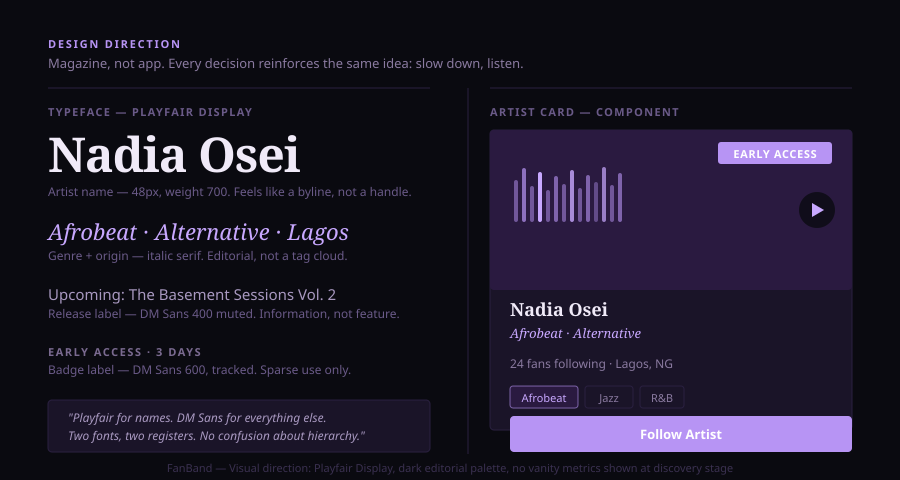

Context
Streaming is great at giving you more of what you already like. It's broken for everything else.
Spotify and Apple Music have optimised for retention — keeping you in the platform, on music you've already signalled you enjoy. That works well for listeners who want comfort. It's a dead end for artists who need first exposure, and for the listeners who would genuinely connect with them if the introduction ever happened.
FanBand started as a question: what does a platform look like if it's built specifically for that first introduction — before the algorithm knows who an artist is?
The Problem
Artists need early fans. Fans need a reason to care before the crowd does. No existing platform solves both.
Streaming platforms give artists analytics. Social platforms give them reach but no monetisation or real community infrastructure. Neither is designed for the moment before an artist breaks — when they most need an audience and when fans have the most to gain from finding them.
The discovery gap isn't a technical problem. Spotify has the catalogue. The gap is structural: the incentives of a scale platform don't reward early-stage artists or early-adopter listeners. FanBand needed to be designed around that specific moment, not as a feature on top of an existing model.

Spotify owns discovery at scale. Instagram owns reach. Neither owns depth for early-stage artists. FanBand is designed for that quadrant.
Approach
Designed around two distinct users with interlocking needs.
Artists and fans want different things, but they need each other. The product was built around that dependency. Artists get a dedicated profile with music upload, posting, and a subscriber base they own. Fans get curated discovery — new artists surfaced by genre and taste, early access signals when an artist they follow releases, and a space to engage before the mainstream catches on.
The design deliberately avoids social platform conventions. No feed designed for infinite scroll, no vanity metrics front-and-centre. The visual direction — editorial, unhurried, built around cover art and listening — is closer to a music magazine than an app. That was a deliberate positioning choice: depth over volume.


Discovery feed: genre-tagged artist cards, waveform previews, early-access signals. No infinite scroll, no vanity metrics in view — designed to surface one artist worth your full attention, not twenty you'll scroll past.
The Process
Two account types, two completely different interfaces — built on the same design system.
Artist and fan accounts see different things when they log in. Artists get an upload dashboard, a post editor, and subscriber analytics — the tools of someone building an audience. Fans get a curated discovery feed, artist follow lists, and early-access release notifications — the tools of someone looking for their next favourite. The permission model was an early architectural decision that shaped everything downstream, including what the navigation even looks like.
The discovery feed was the trickiest design problem. Algorithmic ranking creates filter bubbles and rewards whoever already has momentum — exactly the problem FanBand was built to avoid. The feed is curated by genre and listener preference, but the display is deliberately non-ranked: cards are equal in size, there's no play count or follower number shown at discovery stage. You're responding to the music, not the metrics.
The editorial visual direction required constraint. The temptation was to use the dark purple palette to look "premium." The actual reason for it: music deserves contrast. Cover art pops on dark backgrounds. White space forces the listener to stop and pay attention rather than scanning a dense grid. Playfair Display for artist names gives the platform a different register than a social app — it reads like a magazine byline, not a username.
React handles routing and state. The build includes 10 distinct page types: discover, artist profile, fan profile, release detail, artist posts, notifications, upload, settings, and a now-playing persistent overlay. The design system holds consistently across all of them.
Outcome
A fully built platform with a clear point of view on what music community should feel like.
FanBand is a complete web application — artist and fan accounts, music uploads, community features, and a design system that holds together across all screens. The platform differentiates clearly from both streaming and social conventions. Whether the market would respond is a different question. The product thinking is sound.
Reflection
The design direction is right. The go-to-market thinking isn't fully worked out. A platform like this lives or dies on artist supply at launch — without a critical mass of interesting artists, there's nothing for fans to discover. I'd want a much tighter answer to "how do you get the first 50 artists" before treating this as a viable product rather than a strong design exercise.